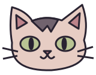

<!doctype html><html lang="es"><meta charset="utf-8"><meta name="viewport" content="width=device-width,initial-scale=1"><meta name="theme-color" content="#19171f"><link rel="manifest" href="manifest.json"><link rel="stylesheet" href="style.css"><title>Nexus Mittens · The Broken Gambit</title><header><b>♞ &nbsp; NEXUS MITTENS</b><small>THE BROKEN GAMBIT</small></header><main><section><div class="op"><div><strong>Nexus</strong><p id="speech" aria-live="polite">La primera decisión es tuya.</p></div></div><div id="board"></div><footer><b id="status"></b><span id="score"></span></footer><small id="clocks"></small><p id="taken"></p></section><aside><label>SALA DE JUEGO</label><h1>The Broken<br><i>Gambit.</i></h1><label for="side">Tus piezas</label><select id="side"><option value="w">Blancas</option><option value="b">Negras</option></select><label for="mode">Personalidad</label><select id="mode"><option>Proyectada atómica</option><option>Filósofo</option><option>Entrenador</option><option>Competitivo</option><option>Silencioso</option></select><button id="fresh">Nueva partida</button><button id="resign">Rendirse</button><button id="draw">Tablas acordadas</button><details><summary>Ajustes del motor y tablero</summary><label>Perfil<select id="profile"><option>Móvil</option><option>Mittens Killer</option></select></label><label>Tiempo por búsqueda (ms)<input id="ms" type="number" min="100" max="30000" value="700"></label><label>Profundidad<input id="depth" type="number" value="18" min="1" max="99"></label><label>Hash (MiB)<input id="hash" type="number" value="16" min="1" max="128"></label><label>Hilos (requiere aislamiento)<input id="threads" type="number" value="1" min="1" max="16"></label><label>Intensidad<input id="intensity" type="range" min="1" max="3" value="2"></label><label>Generación<select id="provider"><option>Procedural</option><option>Proveedor configurado</option></select></label><label>Tema<select id="theme"><option>Broken Gambit</option><option>Clásico</option><option>Oscuro</option><option>Midnight</option><option>Sakura</option></select></label></details><details open><summary>Cuaderno de partida</summary><p id="history"></p><div id="review"></div><button id="inspect">Revisar tablero</button><dialog id="viewer"><button id="closeReview">Cerrar</button><h2>Revisión de partida</h2><label>Movimiento<input type="range" id="ply" min="0" value="0"></label><p id="caption"></p><div id="diagram"></div><p id="summary"></p><button id="variation">Reproducir variante</button></dialog></details><details><summary>Importar y exportar</summary><textarea id="notation" aria-label="FEN o PGN"></textarea><button id="fen">FEN</button><button id="pgn">PGN</button><button id="load">Importar</button></details><button id="retry" hidden>Reintentar motor</button></aside></main><script type="module" src="game.js"></script></html>
